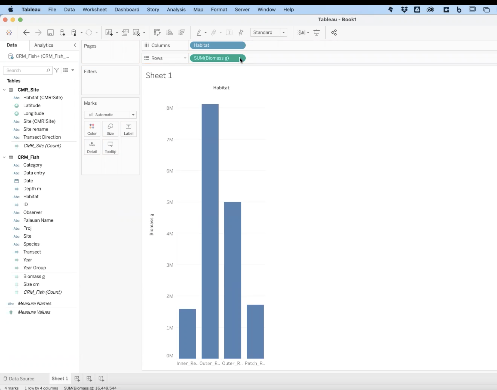

Module 3 Visualizing Data
3.1 Tableau Basics
In this Session
- Learning Objectives
- Why Tableau?
- Installing Tableau
- User Interface
- Loading Data
- Opening a File
- Checking Data Types
- Sheets
- Summary
3.1.1 Tableau Basics: Learning Objectives
- Get familiar with the user interface of Tableau
- Learn how to connect data sets to Tableau interface
3.1.2 Why Tableau?
- We are focusing on Tableau for two primary reasons.
- First, Tableau can read a variety of data types, as you will learn in this session. This means that many different software applications and assets can be combined in a single visualization to present to your audience.
- Second, Tableau is extremely intuitive. Once you get a grasp of the basic skills, you can create compelling visualizations of data in half of the time it would take in other coding software applications.
- Note: For this training, all the exercises and examples were done with Tableau version 2021.1.
3.1.3 Installing Tableau
- Let’s get started with installing the software, to do so, go to https://www.tableau.com/ and select “Try Tableau for Free”
- Register your email address and username and download the software
- Once installed, input your key (you get one when you buy the software) and you are ready to go
- Important note: Tableau offers free 1-year licenses for educational purposes. If you belong to an academic institution, get a free license by going to https://www.tableau.com/community/academic. Once there, click on “Free student license”. You will need to provide information about your academic institution to validate your educational license.
3.1.4 User Interface
- Let’s open Tableau! The image below is what you will see the first time you open Tableau. Once you start to save workbooks, they will populate here under Open.
- The examples under Sample Workbooks are a great resource for inspiration to see the potential of Tableau.
- This column on the left is where you will load data.
- The Training and Resources tabs are very useful to help you keep learning new skills. If you are interested in investigating or expanding your skills, we recommend starting with the materials in these tabs, rather than searching for other sources on the internet. The materials in these two tabs are very well thought out and provide step-by-step instructions on how to learn new Tableau skills.
3.1.5 Loading Data
- The most important section of this interface is the Connect menu, where you will load data. There are three main categories of sources that you can load into Tableau.
- Tableau Server: Data you have saved through your Tableau account. We will not cover that process in this course because most of the users of this training will probably not have a server setup explicitly for Tableau.
- Connecting to a local file: Files from your computer can be Excel files, text files, statistical files, PDFs, and spatial files
- Text files include .csv .doc .log
- You are going to be using Text file frequently if you have .csv (comma separated value) files.
- Spatial files are commonly referred to as shape files or GIS files. If you have ever dealt with shape files, you might remember that shape files are composed of a few different files – some containing the coordinates, metadata, and a table. Tableau has made the adjustments necessary to load one shape file and all the associated files.
- As we will show this later in the course, you can load a shape file and Tableau will display it in a map with just a few clicks.
- Text files include .csv .doc .log
- Connecting to a server: You can connect to services that are online like Google Sheets, or Microsoft Office 365.
- One of the benefits of using this approach is that when you modify the original file, the modifications will be directly updated in Tableau.
- Let’s say you created a report with nice graphs in 2020 because that’s the data that you had when you created the report and then in 2021 you edited your Google sheet. The next time you open your Tableau workbook, all the data will be updated and contain the new data from 2021.
- Let’s say you created a report with nice graphs in 2020 because that’s the data that you had when you created the report and then in 2021 you edited your Google sheet. The next time you open your Tableau workbook, all the data will be updated and contain the new data from 2021.
- One of the benefits of using this approach is that when you modify the original file, the modifications will be directly updated in Tableau.
- It’s very important to make sure that you organize and manage your files such that you know exactly where your files are. Keep in mind that if you connect to a server, any changes that you make in the original file will have an impact on how your visualization looks in Tableau.
3.1.6 Opening a file
- Create a new folder on your desktop. Name the folder “Tableau Data Training”
- Download this file: CRM_Fish_edit and save it in the “Tableau Data Training” folder
- Follow along with this video to connect the new data file to Tableau
- Progress check-in. So far, you have:
- Downloaded an excel file and connected it to Tableau
- In Tableau, you learned about drag and drop. As Alfredo always says, “Tableau is all about drag and drop.”
- You connected the two tabs CRM_Fish and CMR_Site within the CRM_fish_edit Excel file—now in the Tableau interface. There is an orange line showing the connection.
3.1.7 Checking Data Types
- When you load a data file, you have to check that Tableau properly labels the data types. Here, we will discuss what those data types are and how they are assigned in Tableau.
- Dimensions and Measurements
- Dimension (also referred to as factor) is any information that is defined a priori of your actual sampling and helps to describe or categorize your results. Whenever you can call something a category it is a factor. Example: Site name, species, habitat,
- Measurements are the actual results of your sampling. They are usually numbers that you went into the field to measure.
- Example: Fish size, population count, temperature
- Tricky Case: Coordinates
- Coordinates are a factor when you already know the coordinates where you are going to take your sample. Example: You have ten sites that you visit each year to count the number of whales. The coordinates of each site are a factor because they are predetermined. You know where you are going to gather data each time.
- Coordinates are a measurement when it is part of the information that you are recording and it is not predefined. Example: you put a gps tracker on a whale and every time the whale surfaces, you record the coordinates. You did not know ahead of time where the whale would surface and the location is what the study is measuring.
- Tricky case: Is depth a factor or a measurement?
- Depth is a factor when indicating a transect location. Example: If you are always putting transects at either 3m or 30m you can categorize depth into shallow or deep.
- Depth is a measurement when it is recorded with every observation. Example: If you are swimming for 50 minutes to record visual observations of fish while also noting the depth at each observation, then depth is also a measurement. You measured and recorded your depth as you recorded the observation of the fish.
- Practice exercise: Time
- SCENARIO 1: Let’s say that you are birdwatching and you want to know what time of day birds are more active. You count the birds and you write down the time that you saw each bird. Is time a measurement or a factor?
- Answer: Measurement because you are registering the time every time you see a bird.
- SCENARIO 2: You want to know whether there are more birds in the morning, the afternoon, or in the evening.
- Answer: In this case, time is a factor because you go out three times a day, you count all the birds you see at that time and categorize by morning, afternoon, or evening.
- SCENARIO 1: Let’s say that you are birdwatching and you want to know what time of day birds are more active. You count the birds and you write down the time that you saw each bird. Is time a measurement or a factor?
- Types of Data
- Different ways computers classify data:
- Numeric - integers, decimals
- Any kind of numeric field, except Boolean (binary or true/false statements). Examples include integer, double, floating, etc.
- Text - strings, including special characters
- Yes/no, true/false - Also known as logical or boolean
- Spatial Location - Coordinates, Country Name, City Name, ZIP code
- Date and time. Tableau can recognize different date formats. One best practice is to separate fields for year, month, and day, which can be linked together directly in Tableau.
- Numeric - integers, decimals
- Different ways computers classify data:
- Discrete and Continuous Data
- Discrete data refer to variables that can only be conceptualized in a unitary manner. It is quite similar to the difference between using many vs much. In this case, discrete data would be for things described as many.
- Example for text – color, name, city
- Example for numbers – number of transects conducted, position in a ranking
- Continuous data refer to variables that cannot be counted by units, but instead as continuous amounts. Following the example above, continuous data would be for things described as much.
- Example: number of fish recorded, total biomass, height, depth
- Discrete data refer to variables that can only be conceptualized in a unitary manner. It is quite similar to the difference between using many vs much. In this case, discrete data would be for things described as many.
- Dimensions and Measurements
- You should go through the preview of the data and ensure that each column is labeled correctly.
- Note: Never skip this step even if you have worked with the data set in Tableau before!
- The type of data is shown as symbols above the column title

As you can see, the ID column is correctly labeled as a number; Data entry is a string (or text); and Date is a date (little calendar symbol).
- Note: Remember string is a synonym for text in Tableau.
To change the label, click on the symbol and a drop-down menu will appear.
- The CRM_Fish table should look like this:

- The CMR_Site table should look like this:

- Notice that Latitude and Longitude are spatial data. If you open the drop-down, you will see that you can specify the type of spatial data provided under Geographic Role.

3.1.8 Sheets
- Sheets Cheat Sheet
- Discrete vs. Continuous
- DISCRETE is Blue
- CONTINUOUS is Green
- Factors vs. Measures
- Above the grey line is a FACTOR
- Below the grey line is a MEASURE
- Discrete vs. Continuous
3.1.9 Tableau Basics Summary
- Great job! You have completed your first in depth Tableau session. Now, you know how to explore Tableau’s user interface, to connect a data file, check data types, and open sheets.
3.2 Tableau Skills Part 1: Basic plots with single variables
In this Session
- Learning Objectives
- Value Statement
- Creating Your First Graph
- Basic Plots using the Marks Menu
- Line Plot
- Area Plot
- Map
- Bubble Plot
- Scatter Plot
- Editing and Formatting the Axes
- Saving my Files
- Homework Exercise
- Summary
3.2.1 Basic Plots: Learning Objectives
- Explore the user interface
- Learn how to make basic plots and customize them
- Learn how to save and share workbooks
3.2.2 Value statement
- Learning how to make basic plots in Tableau (e.g., bars, lines, pies, etc.) and how to take full control of the appearance will prepare you to take full advantage of Tableau’s more advanced skills.
- For this session we recommend that, if possible, have two screens open—one with Tableau and one with the course material—so you can follow along with the exercises.
3.2.3 Creating your first graph
- In the menu on the left, find Habitat under CRM_Fish

- Drag and drop Habitat into Columns
 - This will place Habitat in the x-axis of the graph
- This will place Habitat in the x-axis of the graph
- Find Biomass under CRM_Fish
Drag and drop Biomass into Rows
 - This will place Biomass in the y-axis.
- Congratulations! You just made your first bar plot in Tableau!
3.2.4 Entire View and Sorting
3.2.5 Show Me Menu
- The Show Me menu may pop up when you create a new graph. It looks like the image below.
- If the Show Me menu obscures your view, you can simply click on Show Me at the top and the menu will collapse.

- How to use the Show Me menu
3.2.6 Troubleshooting: Switching Rows and Columns
- Lilli has a question that came up when she was exploring the Show Me menu. When she tried to go back to a bar chart, the chart was flipped! Watch Alfredo’s answer:
3.2.7 Basic plots using the Marks menu
- The Show Me menu is a great tool where Tableau can suggest automated graphs, but we want to teach you how to take full control of Tableau. In order to do that, we will utilize the Marks menu.
- The Marks menu is located to the left of your bar graph:

- The Marks menu is located to the left of your bar graph:
- Color
- Here you can customize the color, opacity, and border of your graph.

- Click on More colors… and you will see even more options to customize your color palette.
- Practice: Insert a Hex Color
- Find the Hex Color field under More colors…
- For example, here is the “RGB Sliders” window on a Mac.

- Type or paste 4EC5B1 in the Hex Color #
- Now, your graph should be this color:

- For example, here is the “RGB Sliders” window on a Mac.
- Find the Hex Color field under More colors…
- Here you can customize the color, opacity, and border of your graph.
- Size
- If you click on Size, a slider will appear. In bar graphs, the slider changes the width of each bar. Let’s see how Size affects a pie chart.
- First, name this sheet “Bars.” REMEMBER TO ALWAYS NAME YOUR SHEETS
- First, name this sheet “Bars.” REMEMBER TO ALWAYS NAME YOUR SHEETS
- To edit, double-click on the bottom where it says “Sheet 1”

- Create a new worksheet by clicking on the button directly to the right of “Bars”.
- Name this sheet “Pie”.
- In the new sheet, create exactly the same graph. Drag Habitat into Columns and Biomass into Rows.
- Go to Show Me and choose Pie Chart.
- The pie chart will look very small, so change the view to Entire View. Your current sheet should look like the image below:

- The pie chart will look very small, so change the view to Entire View. Your current sheet should look like the image below:
- Try using the Size function in the Marks menu. Notice that when you change the size of this graph, you are changing the size of the whole pie chart.
- If you click on Size, a slider will appear. In bar graphs, the slider changes the width of each bar. Let’s see how Size affects a pie chart.
- When you are changing something like the size, you have to experiment a bit to see what the software will do. Each graph type will respond differently to changing the size.
- Labels
- Details
- We will cover the Details marks in a later session.
- Tooltip
Line Plot Practice Exercise: Create and modify a Line Plot Create a new sheet and name it “Line”. Drag Year into Columns and drag Biomass into Rows. For a line plot, summing the size of all the fish doesn’t make much sense. In this case, showing the average size of the fish per year makes more sense, so let’s do that. Right click on the field where it says SUM (Size cm) and a drop down menu will appear. Choose Measure, then click on Average.
Does your plot now look like the image below? If so, you can move on to the next steps.

Area plot Good job! From here, it is easy to change your Line plot to an Area plot. Under the Marks menu, open the dropdown menu where it says Automatic and click on Area.

As you can see, there are many options in this dropdown menu. This is where you can manually change the type of plot displayed.
Map
There are two ways to create a map.
First, on a new sheet you can drag and drop Longitude to Columns and Latitude to Rows.
Remember that Columns are the x-axis and Rows are the y-axis.
Your map should look like this:

Next, clear the Columns and Rows fields. You can do this either by right-clicking and then choosing Remove or you can drag Longitude and Latitude back into the left column.

Second, there is an even easier way to plug in geographic spatial data. Double-click Latitude and then double-click Longitude. If you assigned the data properly (i.e. Dimension, Geographic Role: Latitude), Tableau will know exactly how to create this map for you.
Your map should look exactly the same as the previous visualization:
Name this sheet “Map”
Customizing the Map using the Marks menu
Using the Color tool, change the color of the elements to a preferred color and add a black border.
Using the Size tool, make the elements a bit larger so you can see them better.
Remember that sliding to the right makes the elements larger and to the left makes them smaller.
Do you notice anything missing? If we were to show this map to a collaborator, they would only see the Longitude and Latitude, but not the Site name. Let’s add the Site name to the Tooltip as dynamic text (or text that will be updated as the user interacts with the visualization).
Find Site in the left column under CRM_Fish. Drag and drop Site into Tooltip in the Marks menu.
Edit Tooltip to clarify the map for users.
Click on Tooltip so we can edit the text. We want the name of the site to be at the top, so cut and paste “Site: <ATTR(Site)>” to move it above Latitude and Longitude.
Delete the static text “Site:” leaving just “<ATTR(Site)>” at the top.
Select all the text and change the alignment to center.
Next, add “˚N” to the right of

Click OK to close the editing window and hover your cursor over your map to check that the tooltip is working.

You have just created an interactive map showing the various sites around Palau where data was collected. Take a moment to explore the functionality of the map you created by moving your cursor around the map and clicking on a few of the data points. Bubble plot To create a Bubble plot, you always start with a Bar plot. In a new sheet, drag and drop Species into Columns and Biomass into Rows. Then, click on Show Me and choose Bubble

E Voilá! A Bubble plot!
Name this sheet “Bubble”
Scatter plot
Finally, let’s create a Scatter plot. Scatter plots are tricky; follow along with this video to learn about scatter plots in Tableau.
Insert video
Under Title delete “Biomass g” and type “Total biomass (g)” Do the same for the y-axis. Replace the title with “Avg. Size (cm)” Now, we want to increase the font size to make the axes titles easier to read. Right-click on the y-axis and choose Format.

Open the dropdown menu that says Font: and change the font size to 14
Do the same for the x-axis. When you are done, click on the X in the right corner of the Format window to exit. Saving my Files There are two primary ways to save your work in Tableau. The first is similar to saving any other type of file on your computer. Click on File > Save As on the menu bar at the top of your screen. Name this file “Tableau_class_skills_1”. Save the file under your Tableau Data Training folder.

Let’s take a look at the files. If you look at the Tableau Data Training folder, you’ll see that the Excel file CRM_Fish is 2.1 megabytes while the Tableau Workbook (.twb) that you just saved is 226 kilobytes. That’s significantly smaller than the original Excel file because your Tableau Workbook file doesn’t contain the data, it just has the instructions for what to do with the data. Therefore if you save .twb files (Tableau Workbook file) and you want to share them with a colleague, you also have to share the original data file. Packaged Workbooks The second way to save a file saves a compressed version of both the data file and the Tableau Workbook. This is called a Packaged Workbook. First, you have to create a data extract, which puts your data in Tableau format. On the menu bar at the top of your screen click on Data > CRM_Fish > Extract Data


Click extract, name this file CRM_Fish_Extract, and save it in your Tableau Data Training folder. Now that you have created your extract, you will create a packaged file. In order to do that, go to File > Export Packaged Workbook > Save If you look at the folder in your finder, you will see that the new file type is .twbx which means it contains both the data and the instructions (Tableau Packaged Workbook file). If you want to share your work with colleagues who also have Tableau installed, you will share Packaged Workbooks (.twbx) with them. Homework Exercise Open data file Excel file CRM_Fish in Tableau, check field dimensions vs measure, data types, discrete vs. continuous. Create a bar plot, a pie chart, line, map, scatter plot Make presentable for an audience. Ensure that: Axes are legible size and descriptive titles Marks utilize nice and legible colors Tooltips provide useful information Name all worksheets Create a packaged workbook (.twbx) Check your work by comparing it with this file.
Summary Congratulations! You are now equipped to create basic plots in Tableau and take full control of their design. You also know that when sharing your work with colleagues, you should always include the data, either as a separate file, or included in your workbook as a data extract.